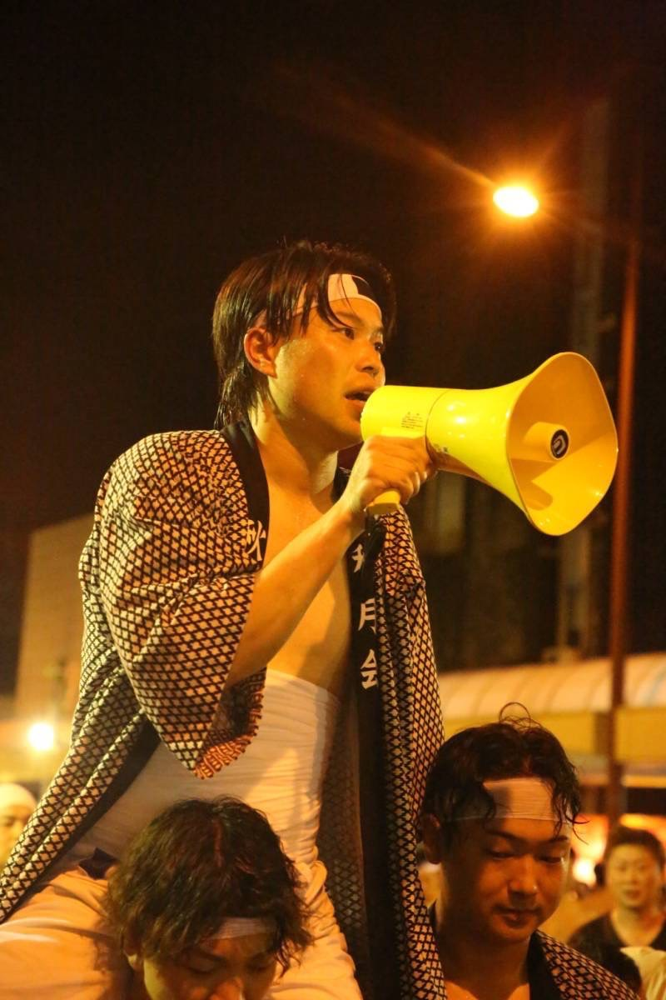
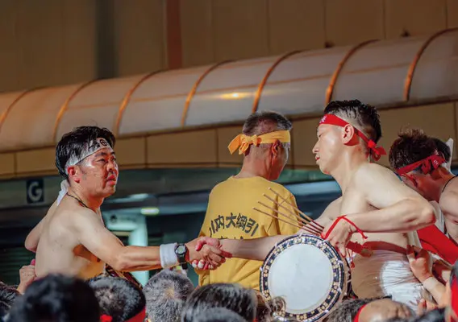
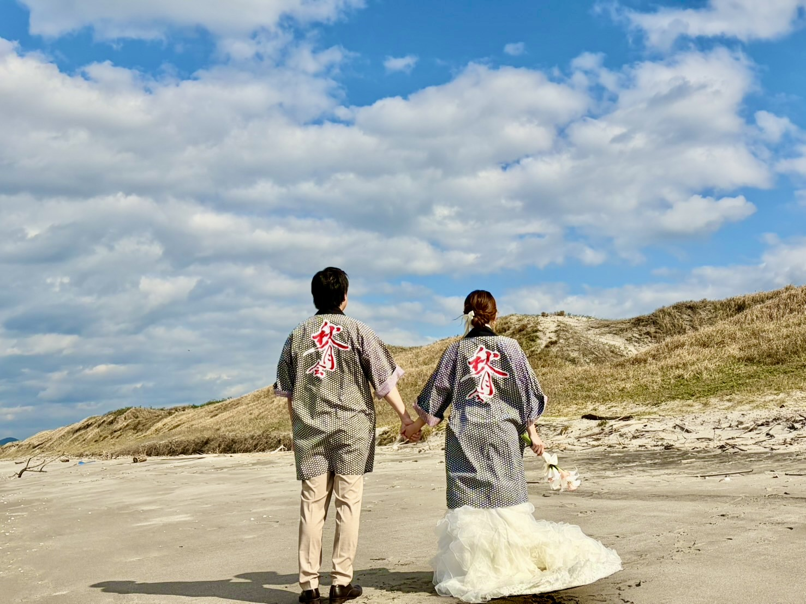
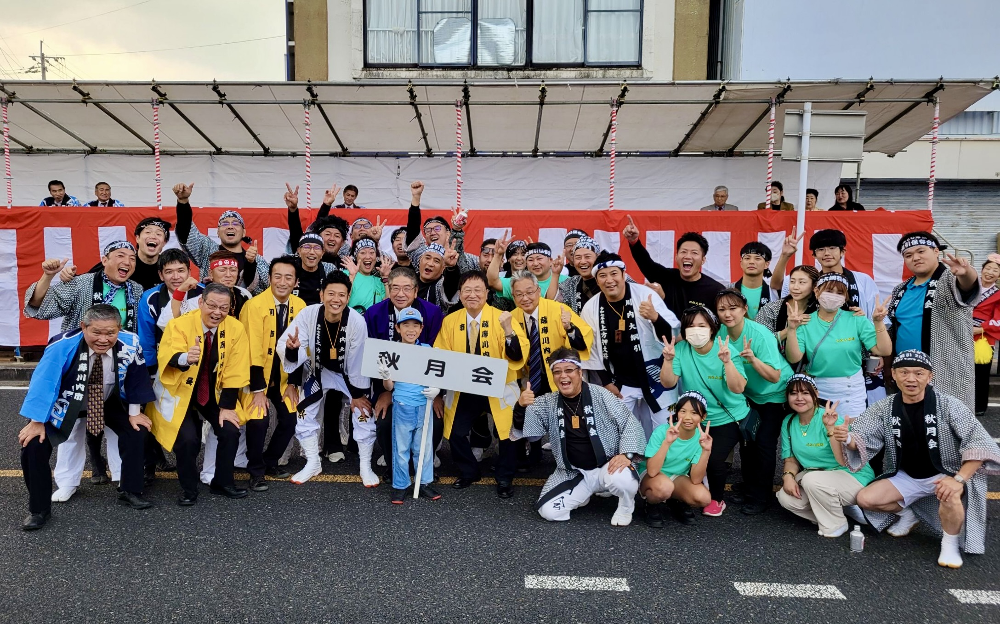

一年をかけて、一夜を編む。
大綱引は9月22日だけではありません。10月から始まる「藁集め」から全ては始まります。農家を一軒ずつ回り、汗を流して集めた藁が、あの巨大な綱になる。当日だけでは味わえない達成感がここにあります。

薩摩川内・四百年の伝統を背負う
新入会員、熱烈募集中
薩摩川内市の誇り「川内大綱引」。
私たち秋月会は、現在30名に満たない少人数でこの歴史を守っています。しかし、メンバーの引退等により、このままでは会が消滅してしまう危機にあります。


現在の20代はわずか1名、30代は5名。
今、このページを読んでいる「あなた」の力が必要なのです。
大綱引は9月22日だけではありません。10月から始まる「藁集め」から全ては始まります。農家を一軒ずつ回り、汗を流して集めた藁が、あの巨大な綱になる。当日だけでは味わえない達成感がここにあります。

覚悟を決めて、この街で生きていく。
仕事以外に、本気で笑い、本気で語り合える仲間がいますか？秋月会は、人生の節目を共に祝える「家族」のような会です。
対象：川内大綱引きを愛する20代〜40代の方
年会費 12,000円
「無理な勧誘は一切ありません。
雰囲気を見て決めてください！」
まずは定例会の見学や、藁（わら）集め体験からお気軽に！

現在のメンバー。この輪に加わりませんか？